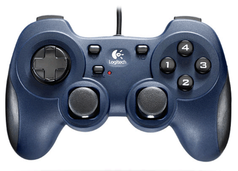
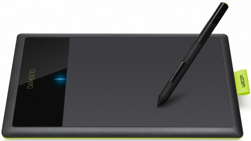
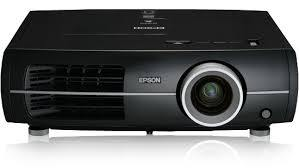
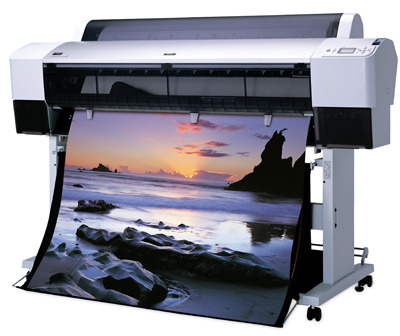
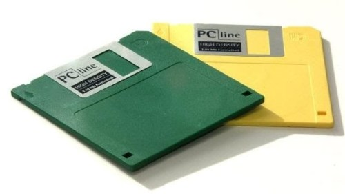
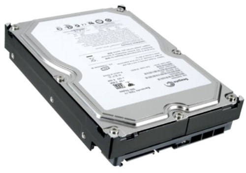
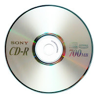

AplicacionesEntradas y SalidasLas computadoras electrónicas modernas son una herramienta esencial en muchas áreas: industria, gobierno, ciencia, educación,…, en realidad en casi todos los campos de nuestras vidas. El papel que juegan los dispositivos periféricos de la computadora es esencial; sin tales dispositivos ésta no sería totalmente útil. A través de los dispositivos periféricos podemos introducir a la computadora datos que nos sea útiles para la resolución de algún problema y por consiguiente obtener el resultado de dichas operaciones, es decir; poder comunicarnos con la computadora. La computadora necesita de entradas para poder generar salidas y éstas se dan a través de dos tipos de dispositivos periféricos existentes:
Las Computadoras son una herramienta esencial, prácticamente en casi todos los campos de nuestras vidas; es útil, ayuda a la mejora y excelencia del trabajo; lo que lo hace mucho mas fácil y práctico En poco tiempo, las computadoras se han integrado de tal manera a nuestra vida cotidiana, puesto que han transformado los procesos laborales complejos y de gran dificultad hacia una manera más eficiente de resolver los problemas difíciles, buscándole una solución práctica. El papel que juegan los dispositivos periféricos de la computadora es esencial, ya que sin tales dispositivos la computadora no sería útil a los usuarios.
Los dispositivos periféricos nos ayudan a introducir a la computadora los datos para que esta
nos
ayude a la resolución de problemas y por consiguiente obtener el resultado de dichas
operaciones, es
decir; estos dispositivos nos ayudan a comunicarnos con la computadora, para que esta a su vez
nos
ayude a resolver los problemas que tengamos y realice las operaciones que nosotros no podamos
realizar manualmente.

Unidades de entrada Tableta Digitalizadora Proyector de Video Ploter AlmacenamientoEs todo aparato que se utiliza para grabar los datos de la computadora de forma permanente o temporal. Una unidad de disco junto con los discos que graba, son dispositivos de almacenamiento. A veces se dice que una computadora tiene dispositivos de almacenamiento primario o principales y secundarios o auxiliares. Cuando se hace esta distinción, el dispositivo de almacenamiento primario es la memoria de acceso aleatorio “RAM” de la computadora, un dispositivo de almacenamiento permanente pero cuyo contenido es temporal. El almacenamiento secundario incluye los dispositivos de almacenamiento permanentes, como unidades de disco duro, CD o DVD. Por malo y anticuado que sea un ordenador, siempre dispone de al menos uno de estos aparatos. Su capacidad es totalmente insuficiente para las necesidades actuales, pero cuentan con la ventaja que les dan los muchos años que llevan como estándar absoluto para almacenamiento portátil.
Tamaño Tipo de disco:
Algunos ejemplos son:



Fuentes de AlmacenamientoEn toda computadora existe un reloj del sistema, este reloj es accionado por un cristal de cuarzo que al momento de aplicarle electricidad las moléculas en el cristal vibran muchas veces cada segundo. Estas vibraciones son usadas por la computadora para medir sus operaciones de procesamiento. Al paso de los años las velocidades de los relojes se ha incrementado constantemente. La primera PC operaba a 4.77 megaHertz (millones de ciclos por segundo). Un ciclo de reloj es el tiempo que le lleva un transistor en apagarse y encenderse La fuente de alimentación eléctrica de una computadora proporciona a ésta la energía necesaria a los circuitos de la unidad central de proceso, y demás elementos hardware que la conforman. Esta fuente de alimentación tiene como objetivo reducir las variaciones de voltaje existentes en la toma de corriente. Internamente se encuentra provisto de un ventilador que disipa el calor desprendido por el propio bloque y en términos generales también por la computadora. En la entrada de esta fuente se encuentra un cable que se conecta a la red eléctrica; en la salida varios cables en paralelo que se conectan con la tarjeta madre, así mismo sirven como fuente de alimentación de las unidades de disco y demás dispositivos. Esta alimentación provee energía a la salida garantizando elfuncionamiento adecuado de la computadora. La fuente estabiliza las tensiones presentadas. El fabricante especifica el rango de variación que se tolera. Las tensiones normalizadas son de +-12V y +-5V |